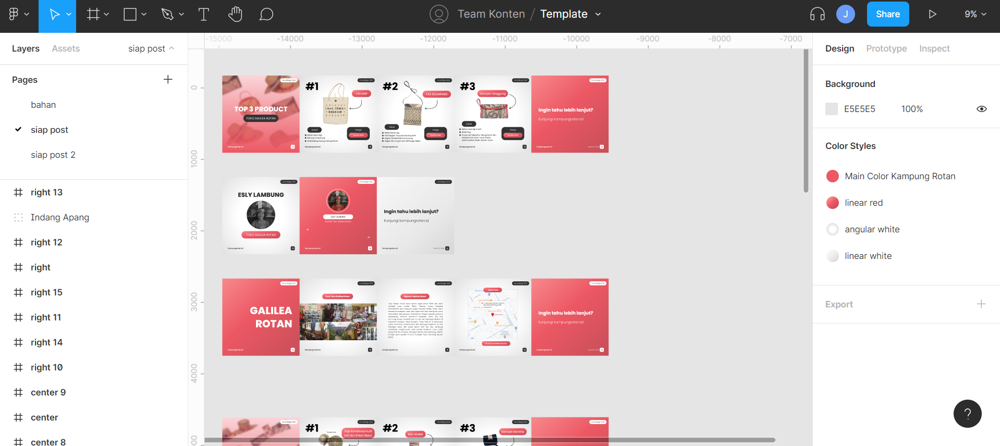

Kampungrotan.id
Pendahuluan
Kampungrotan.id merupakan sebuah Pusat Kerajinan Rotan di Kalimantan Tengah berbasis website. Project ini merupakan proyek sosial pada lomba Innovillage 2021. Peran saya disini adalah sebagai content designer yang membantu memasarkan produk melalui sosial media Instagram dengan membuat desain konten.
Kolaborasi
Tim kami berjumlah dua orang dengan saya sebagai content leadernya. Saya memutuskan pembuatan konten melalui platform website Figma dengan alasan Figma mampu berkolaborasi, gratis, serta mudah digunakan.
Konten
Konten yang kami buat tentunya berasal dari client/stakeholder kami. client meminta konten feeds dapat tertata rapi dan konsisten. Pada dasarnya disini saya hanya membantu mengaplikasikan desain dari isi konten yang telah ditentukan.
Breakdown Content
Postingan Feed Kolom sebelah kiri


Disini kami membuat Postingan untuk kolom sebelah kiri yaitu Top 3 product dari setiap toko. Saya membuat keterangan tokonya apa dan memberi background yang berisi produk-produk masing-masing toko
Pada slide berikutnya, saya mendesain detail dari produk seperti nama, bahan, dan harga produk. Untuk pemilihan fontnya sendiri saya memakai font Poppins dan warnanya mengikuti websitenya yaitu merah hitam dan putih.
Pada akhir slide, saya membuat rangkuman keseluruhan dengan ajakan untuk mengunjungi website kampungrotan.id
Postingan Feed Kolom sebelah tengah


Disini kami membuat Postingan untuk kolom sebelah tengah yaitu Profile pemilik toko dari setiap toko. Saya membuat keterangan tokonya apa dan memberi foto dari pemilik toko
Slide berikutnya ialah rekaman harapan pemilik toko dalam format mp4. Bagian tengah kosong tersebut akan berisi subtitle harapan pemilik toko.
Pada akhir slide, saya membuat rangkuman keseluruhan dengan ajakan untuk mengunjungi website kampungrotan.id
Postingan Feed Kolom sebelah kanan


Disini kami membuat Postingan untuk kolom sebelah kanan yaitu Profile dari toko dari setiap toko. Saya membuat judul yang berisi nama tokonya dengan size yang besar agar dapat mewakili identitas setiap baris feed dengan jelas.
Pada slide berikutnya, saya memberi foto-foto toko dari dokumentasi yang dimiliki tim. Slide ketiga, saya mendesain penjelasan sejarah dari toko. Kemudian pada slide selanjutnya menunjukan lokasi pada gmaps dan saya memberi link embed dari toko yang akan mengarah ke gmaps.
Pada akhir slide, saya membuat rangkuman keseluruhan dengan ajakan untuk mengunjungi website kampungrotan.id
Kesimpulan
Pada akhirnya, Proyek ini selesai dengan baik walaupun proyek sosial ini belum berhasil memenangkan lomba. Tim Konten sempat memiliki beberapa kendala seperti isi konten yang akan dituangkan tidak sesuai dan mengalami sedikit banyak kekeliruan yang berasal dari client. Namun, semua dapat terasi dengan tepat waktu dan baik karena koordinasi Tim sangatlah baik sehingga pengerjaan proyek dapat berjalan dengan lancar. Saya sendiri belajar banyak dari mengikuti Kolaborasi ini dan berharap kedepennya menjadi lebih baik lagi. Sekian cerita singkat dari proyek ini, Terima kasih sudah membaca :D